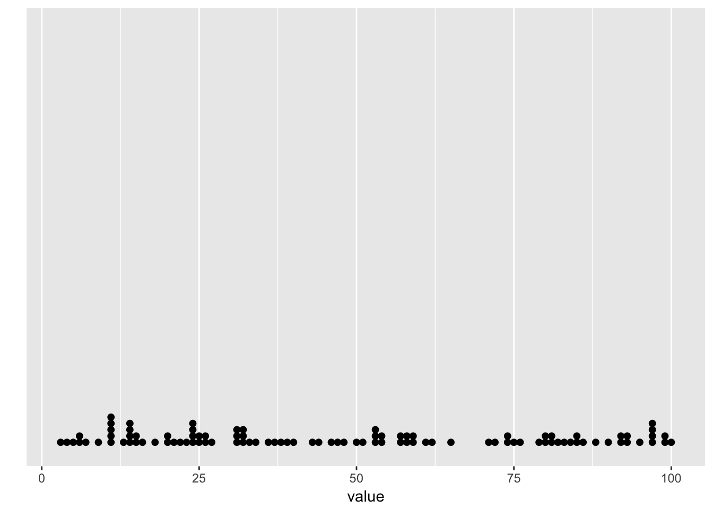
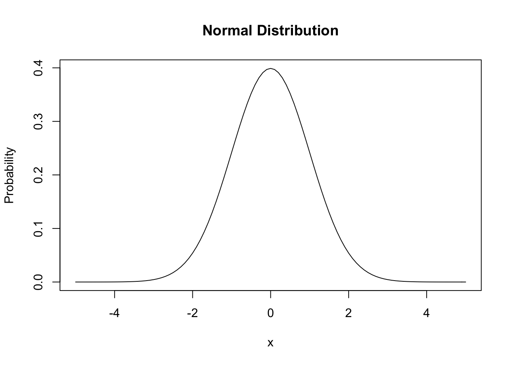

Chapter 1 Opening thoughts
If you go back a few hundred years, what we take for granted today would seem like magic - being able to talk to people over long distances, to transmit images, flying, accessing vast amounts of data like an oracle. These are all things that would have been considered magic a few hundred years ago. —Elon Musk
The goal of this book is to develop practical skills for making sense of data. It is aimed at students who are not familiar with statistics, may not be confident in their math skills, and have little to no experience with using computers to ask and answer questions with data.
Why should you care about making sense of data? The general goal is to use data to ask and answer questions about the world around us. Making sense of data helps us ask and answer those questions. Statistics are the tools we use to make sense of the data.
So, to make sense of data to ask and answer questions, we need to make sense of Statistics. There are different philosophies about statistics, how to teach it, and how to do it. Statistics are like tools, they were built with a purpose in mind, but can be used in different ways. I can use a screwdriver to twist a screw, or to pop a balloon, but I don’t use a screwdriver as my pillow, because it isn’t a good pillow. Similarly, the same statistics can be used to solve different problems, and the same problem can be solved by using different statistics. What is most important is solving the problem, and justifying why your solution solves the problem.
We will be focusing on how to solve problems with making sense of data. Data are records of measurements about things around us in the world. Data could be the scores on midterm exams, the heights of people in France, or anything else that can be measured or counted. We are living in an age of data, where human’s have created more data than anyone can imagine.
1.1 More data than anyone can imagine
People have been producing data about the world around them, and using the data to ask and answer questions for a long time. With the invention of the computer, humans have been radically increasing the amount of data they are producing and storing, and expanding the ability to make sense of that data to answer all sorts of new and old questions.
How many books can an average person read in a lifetime? How could you estimate this? You would need to know the average lifespan of a person, the average reading speed (words per minute), and the average number of words in a book. You could find estimates for those numbers by searching the internet. Post your answers as an annotation using Hypothesis.
The capacity for storing data has already increased beyond anyone one person’s ability to imagine the scale of the situation. And the capacity continues to increase. For example, humans have already written more books than anyone can read in a lifetime. According to wikipedia, Google has digitized 25 million books as of 2015, and estimates that there are about 130 million total distinct books to digitize (they plan to digitize them all). According to Internet Live Stats there over 1.27 billion websites as of October 2017, they also have a counter that is going up and up every second. In 2010, the CEO of Google, Eric Schmidt said “Every two days now we create as much information as we did from the dawn of civilization up until 2003, according to Schmidt. That’s something like five exabytes of data”. In other words, more than anyone can imagine.
At the same time, our ability to process data using computers has been increasing to astounding levels. The first mechanical computers were big and slow, taking up entire rooms. Now, they are faster and faster and smaller and smaller. We carry them in our pockets. In 1965, Gordon Moore, co-founder of Intel (producer of circuits for computers), published a paper pointing out that the number of transitors that could be packed into an integrated circuit was doubling every two years. Roughly this means that the processing speed of computer systems was doubling every two years. Ever since 1965, this trend has continued. In recent years, the trend has slowed down a bit, with speed doubling every two and half years. That’s a lot of doubling.
The doubling of computer speed every two years is a great example of something that radically increases in an astounding fashion. To get an intuition for doubling, let’s look a sequence of numbers that doubles. We start with 2, then we double it (2x2=4), then we double that (2x4=8), then double that (2x8=16), and so on. What do those numbers look like if we keep doubling 25 times. Well, 2x16=32, 2x32=64, 2x64=128, 2x128=256, 2x256=…you know what, I’m tired of doing that in my head. And, I lost my calculator (I don’t even own a calculator). I could use the calculator app on my phone, but it’s not nearby, and I really don’t feel like tapping out the numbers. Call me lazy. Instead, I’ll force my computer to do the work for me. It’s much easier that way.
Below you will see two things. In the grey box is some computer code to compute the sequence using free software called R. Next is a table, with three columns. The first column shows the number (2) that we are doubling, the second column shows how many times we double the number, and the third column shows the resulting answer.
Over this course you will be learning how to use the free software R to analyze data. I will also be using R in this textbook to illustrate different concepts. I will usually present the R code I use, just like the code in the grey box. At this point you do not need to focus on the code, however it is there for your future reference.
library(knitr)
base_number<-rep(2,25)
exponent<-seq(1,25)
result<-base_number^exponent
table_of_doubling<-data.frame(base_number,exponent,result)
kable(table_of_doubling)| base_number | exponent | result |
|---|---|---|
| 2 | 1 | 2 |
| 2 | 2 | 4 |
| 2 | 3 | 8 |
| 2 | 4 | 16 |
| 2 | 5 | 32 |
| 2 | 6 | 64 |
| 2 | 7 | 128 |
| 2 | 8 | 256 |
| 2 | 9 | 512 |
| 2 | 10 | 1024 |
| 2 | 11 | 2048 |
| 2 | 12 | 4096 |
| 2 | 13 | 8192 |
| 2 | 14 | 16384 |
| 2 | 15 | 32768 |
| 2 | 16 | 65536 |
| 2 | 17 | 131072 |
| 2 | 18 | 262144 |
| 2 | 19 | 524288 |
| 2 | 20 | 1048576 |
| 2 | 21 | 2097152 |
| 2 | 22 | 4194304 |
| 2 | 23 | 8388608 |
| 2 | 24 | 16777216 |
| 2 | 25 | 33554432 |
You can see from the table that the result keeps getting bigger and bigger. In fact, each result is twice as big as the one before. This is called exponential growth. It can be useful to see what exponential growth looks like in a figure.
plot(table_of_doubling$result)
If the result of doubling leads to big increases each time, why do so many of the dots appear on the bottom of the figure, and only a few dots on the right look as if they are increasing?
Every new number is so big, by comparison most of the previous numbers are tiny, which is why only a few dots look as if they are going up.
Each dot shows how our number doubles at every step. It looks like the first several dots are very small numbers, almost like a flat line. However, the dots near the right end of the graph are shooting straight up into huge numbers.
What does all of this mean for computing power? It means as of today our computers already have a huge ability to process data with great speed, and that every couple of years that ability gets twice as huge. In other words, we can solve some problems now that we couldn’t solve two years ago, and in two years from now we will able to solve new problems that nobody has even thought of yet.
I brought up two facts about data for two reasons. The first fact was that humans are creating mountains of new data everyday, more than anyone can imagine. This is exciting because it means we have new opportunities to use that data to ask and answer questions about the world around us. The second fact was that computers are doubling in their processing speed roughly every two years. This is exciting because it means we can use computers to process data for us very quickly, which will allow us to ask and answer questions more easily, and without spending all of our time doing calculations. We can use our precious time to ask better questions, and get better answers.
1.2 Recipes versus Cooking: Or, the calculator controversy
If a student learns to add numbers only by using a calculator, have they really learned anything about adding? Perhaps they wouldn’t know how to add if they didn’t have a calculator. After all, adding on a caluculator is just pressing a bunch of buttons in the correct order, that’s not adding. If a student learns how to add numbers by using a pencil and paper, then they must really know how to add. Writing numbers and + signs down on paper is not at all the same as pressing buttons. Writing numbers down is the real deal. Sometimes teachers ban the use of calculators in math classes. There is no ban in this class, use them if you want. Instead, we use computers, they are much better calculators, and much faster than pencil and paper. In fact, once you tell a computer what to do, it can do so much more than adding, all with a click of a single button.
The calculator controversy points to issues that sometimes pop up in classrooms. Some teachers worry that if they give students a tool, like a calculator, that can easily solve a problem, like adding, then students may learn to use the tool (press buttons), but fail to learn the concepts behind the tool (adding). So, they ban the tool, and assume that students will have no choice but to learn the concept. The problem isn’t the tool, teaching and learning concepts always involves some kind of tool (pencil and paper are tools, math would be even harder without them). The problem is that teaching and learning concepts can be challenging.
Courses in statistics usually have a goal of teaching the concepts behind statistics. The idea is that if you understand the concepts, you can use them flexibly to solve different kinds of problems. Even more, if you understand how the concepts work, you could make new concepts and use those to solve problems. These are good ideals to aspire to. However, practical matters often get in the way of these ideals. For example, statistics often involve mathematical formulas, and exam questions often challenge students to compute the correct answer for a given math problem. Although this is a useful skill, it is a little bit like the calculator controversy. If you can provide a numerical answer to a math equation, do you understand what the equation means? Or, have you simply demonstrated that you can plug numbers into a formula, and then use your calulator to arrive at the correct answer. Similarly, there are numerous software packages for statistics that, like calculators, can compute desired statistics for a set of data with a few mouse clicks. Does learning how to click buttons in a computer program require that you understand the concepts behind the statistics you are performing?
A student who can plug numbers into formulas, and click buttons on a computer screen can probably pass most introductory statistics courses. This usually means those students didn’t learn much about statistics. For students who never have to use statistics again, this might not be too bad, why bother learning a skill that you’ll never use. However, it is not uncommon for researchers (who have to use statistics all the time) to find themselves in a similar position. They might know how to plug numbers into formulas, and how to click buttons in statistics software to analyze data, and they may even publish their findings without having a solid understanding of what they were doing to their data. This can happen for lots of reasons, including the fact that not everybody has enough time to get a Ph.D. in statistics before they do research. But, this is not an excuse. If you are going to work with data, you should think about what you are doing, and be able to describe why your methods of analysis make sense for the problem you are tring to solve.
In making these observations I have built up some tension between the goals of understanding concepts behind statistics, and using tools like formulas and software packages. By analogy, I point to similar tension between cooking and recipes. For example, a good cook doesn’t need to use recipes, they know the principles behind cooking, and use those principle to craft dishes. If the cook writes down a recipe in a clear, step-by-step format, then other people, who do not understand the principles behind the recipe, can also create the dish, just by following the step-by-step instructions. I think you would find many chefs who learned the principles behind cooking partly by studying and using recipes. So, learning the principles behind cooking can go hand-in-hand with using recipes. The same goes for statistics. Learning the principles behind statistics goes hand-in-hand with using the wide variety of tools we have at our disposal to crunch numbers. In this course, we will use recipes for statistics to show how to cook with data.
1.3 Too many numbers
One problem with collecting data to answer a question is that you often find yourself with a large pile of numbers. The problem is that large piles of numbers are hard to understand.
Problems that involve a few numbers are usually much easier to understand. For example, let’s say you have $500 in your bank account, and you owe $300 dollars on your credit card. If you pay off the full amount you would have $500-$300 = $200 left over in your bank account.
Let’s take a look at a large pile of numbers.
a<-sample(1:100,100,replace=T)
kable(matrix(a,ncol=10))| 61 | 74 | 59 | 88 | 97 | 23 | 5 | 100 | 72 | 51 |
| 9 | 24 | 11 | 31 | 97 | 39 | 36 | 86 | 21 | 62 |
| 24 | 15 | 81 | 81 | 99 | 99 | 58 | 44 | 90 | 7 |
| 6 | 85 | 95 | 11 | 11 | 15 | 27 | 24 | 54 | 25 |
| 97 | 74 | 14 | 57 | 22 | 4 | 80 | 92 | 80 | 71 |
| 59 | 24 | 76 | 50 | 57 | 20 | 79 | 13 | 46 | 18 |
| 58 | 54 | 32 | 85 | 14 | 92 | 3 | 33 | 84 | 16 |
| 6 | 47 | 53 | 14 | 40 | 75 | 93 | 32 | 11 | 93 |
| 26 | 31 | 31 | 14 | 11 | 65 | 82 | 48 | 20 | 25 |
| 37 | 83 | 43 | 32 | 34 | 53 | 97 | 53 | 26 | 38 |
What can we say about all of these numbers in the table above? Just by looking at the table we can see there are a lot of numbers. If you count the number of rows and columns, you can see there are 10 rows, and 10 columns, so there must be 10x10=100 total numbers. We can also see that the numbers are all integers. If you keep up your detective work you might see that there are no negative numbers, and that there are no numbers larger than 100.
Imagine now that you had to explain what these numbers were like to your friend. What else could you say about these numbers? What would you want to be able to say so that you and your friend could both understand these numbers?
Here is a short list of questions that could be useful to answer about the numbers. 1. How many numbers are there? 2. What is the smallest number? 3. What is the biggest number? 4. Are the numbers very similar to each other? 5. Are the numbers very different from each other? 6. Do some numbers occur more than others?
If we could answer these questions, then we would be starting to describe some of the properties that the numbers have. In Chapter 2, we take a deeper dive into the common statistical tools used to describe numbers. For now, we will focus on a broader goal of description: to summarize the numbers in a useful way. For example, if we could summarize the numbers in a useful way, then rather than being confused by looking at our huge list of numbers, we could instead look at our summary of the numbers and gain a pretty good sense of the data.
First let’s organize the numbers differently to get a better sense of them. One way to organize them is to list them from smallest to largest. Let’s look at the sorted numbers:
kable(matrix(sort(a),ncol=10,byrow=T))| 3 | 4 | 5 | 6 | 6 | 7 | 9 | 11 | 11 | 11 |
| 11 | 11 | 13 | 14 | 14 | 14 | 14 | 15 | 15 | 16 |
| 18 | 20 | 20 | 21 | 22 | 23 | 24 | 24 | 24 | 24 |
| 25 | 25 | 26 | 26 | 27 | 31 | 31 | 31 | 32 | 32 |
| 32 | 33 | 34 | 36 | 37 | 38 | 39 | 40 | 43 | 44 |
| 46 | 47 | 48 | 50 | 51 | 53 | 53 | 53 | 54 | 54 |
| 57 | 57 | 58 | 58 | 59 | 59 | 61 | 62 | 65 | 71 |
| 72 | 74 | 74 | 75 | 76 | 79 | 80 | 80 | 81 | 81 |
| 82 | 83 | 84 | 85 | 85 | 86 | 88 | 90 | 92 | 92 |
| 93 | 93 | 95 | 97 | 97 | 97 | 97 | 99 | 99 | 100 |
By sorting the numbers we can now find the smallest and largest number in the set. The smallest number, 2, is the first number; and the largest number, 100, is the last number. So, we also know that all of the numbers are between 2 and 100.
We can also start to see that some numbers occur more than other. For example, there are no 1s, there are two 2s, there is one 3, one 9, one 10, four 11s, and so on. To get a more complete sense of these frequencies of occurence, we would have to count the number of times each number appears in the set, and then produce a table like the one below. In the table, I have used the variable ‘a’ to refer to the set of all the numbers. So, the ‘a’ column refers to each number that occurs in the set, and the ‘freq’ column refers to the frequency count, or number of times that each number appears in the set.
kable(table(a))| a | Freq |
|---|---|
| 3 | 1 |
| 4 | 1 |
| 5 | 1 |
| 6 | 2 |
| 7 | 1 |
| 9 | 1 |
| 11 | 5 |
| 13 | 1 |
| 14 | 4 |
| 15 | 2 |
| 16 | 1 |
| 18 | 1 |
| 20 | 2 |
| 21 | 1 |
| 22 | 1 |
| 23 | 1 |
| 24 | 4 |
| 25 | 2 |
| 26 | 2 |
| 27 | 1 |
| 31 | 3 |
| 32 | 3 |
| 33 | 1 |
| 34 | 1 |
| 36 | 1 |
| 37 | 1 |
| 38 | 1 |
| 39 | 1 |
| 40 | 1 |
| 43 | 1 |
| 44 | 1 |
| 46 | 1 |
| 47 | 1 |
| 48 | 1 |
| 50 | 1 |
| 51 | 1 |
| 53 | 3 |
| 54 | 2 |
| 57 | 2 |
| 58 | 2 |
| 59 | 2 |
| 61 | 1 |
| 62 | 1 |
| 65 | 1 |
| 71 | 1 |
| 72 | 1 |
| 74 | 2 |
| 75 | 1 |
| 76 | 1 |
| 79 | 1 |
| 80 | 2 |
| 81 | 2 |
| 82 | 1 |
| 83 | 1 |
| 84 | 1 |
| 85 | 2 |
| 86 | 1 |
| 88 | 1 |
| 90 | 1 |
| 92 | 2 |
| 93 | 2 |
| 95 | 1 |
| 97 | 4 |
| 99 | 2 |
| 100 | 1 |
Notice, this is a very long table, it is good for looking up frequency counts for specific numbers, but it is not very good for getting a sense of the data in one glance. In order to get a sense of the data all in one go, it can be useful to create a picture of the data.
library(ggplot2)
#t_a<-as.data.frame(table(a))
t_a<-data.frame(observation=seq(1,100,1),value=a)
ggplot(t_a,aes(x=value,y=value))+geom_dotplot(binwidth=1, method='histodot')+scale_y_continuous(name = "", breaks = NULL)
1.3.1 Distributions
1.3.2 Normal Distribution
plot(function(x) dnorm(x, log = FALSE), -5, 5,
main = "Normal Distribution",
ylab="Probability")